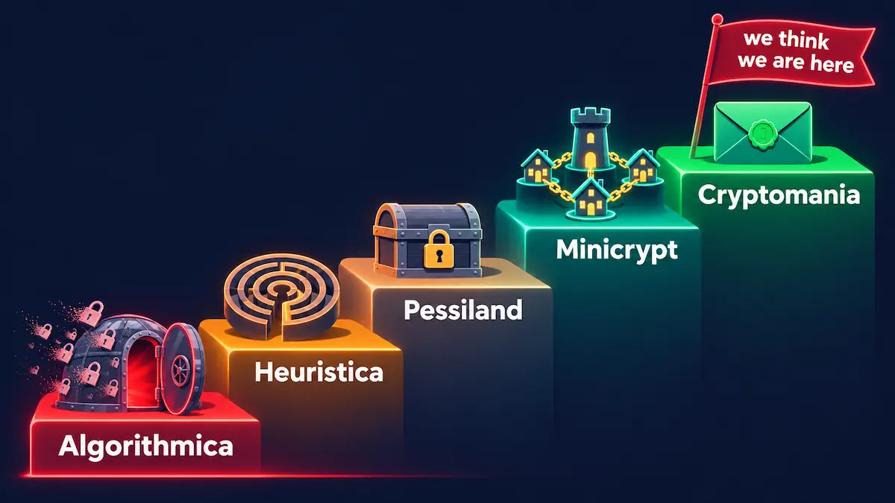
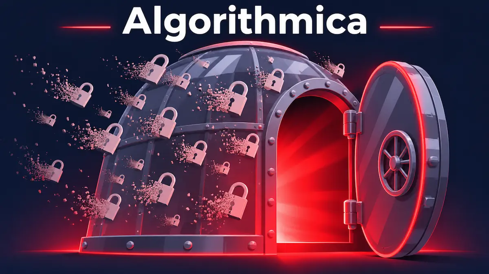
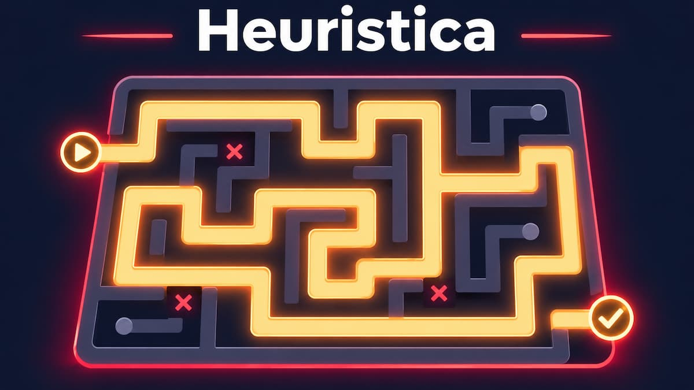
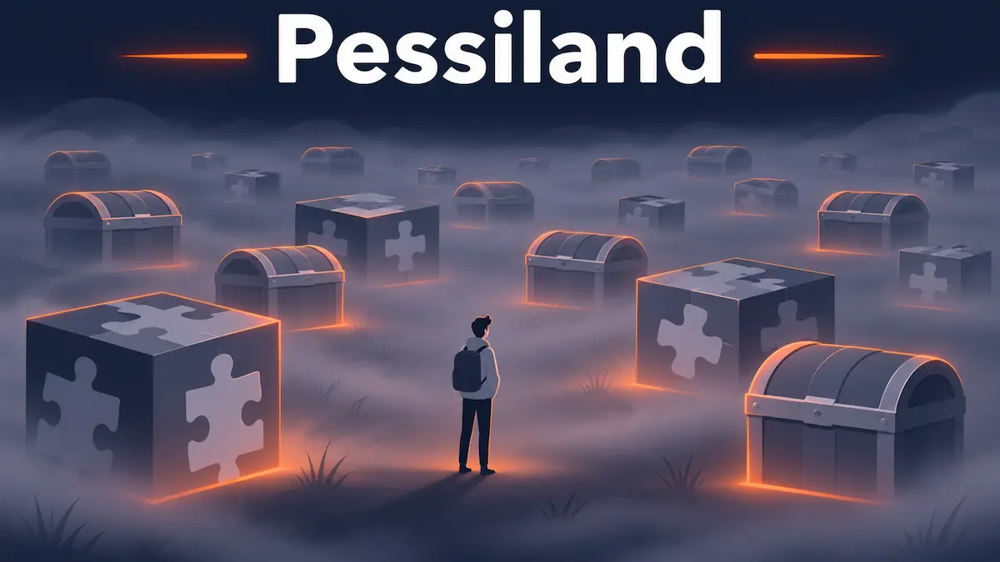

Which crypto world do we live in?
Five possible worlds, from worst to best for cryptography. Most experts think we live in Cryptomania, but nobody can prove it. The descriptions are our own rough estimates, not established facts. Background: Quanta Magazine, Lance Fortnow.


Algorithmica
What it means. A practical, working algorithm solves hard problems fast (P = NP, or NP inside BPP). Essentially all crypto fails.
Rate of change. Abrupt and total. Rebuilding means going back to physical trust: keys in person, paper, couriers. Years, not months. A secret version is worse, because the damage is silent at first.
Risks. Payments, banking, registries, software updates and messaging fail together. Fraud and forgery surge.

Heuristica
What it means. Hard problems exist in theory, but they are easy on average, so real keys still fall.
Rate of change. Slower and patchier. Attacks get cheaper over months or years, so there is some warning. The weakest systems fall first.
Risks. The same damage as Algorithmica, plus a long period of not knowing what is still safe.

Pessiland
What it means. Hard problems exist, but you cannot build crypto from them.
Rate of change. No single shock, but nothing to rebuild digital trust from either. We rely on physical and institutional trust for good.
Risks. The digital economy runs on trusted middlemen and in-person checks. High costs and concentrated power.
Minicrypt
What it means. Hashes and symmetric crypto survive. Public-key crypto (RSA, elliptic curves) does not.
Rate of change. A sharp break for signatures and web security, but a known toolkit remains. Rebuilding plausibly takes one to several years. A secret break is the biggest danger.
Risks. Trust on open networks is lost until rebuilt. Key servers become single points of failure. Anything with an exposed public key, including old signed records and coins, is vulnerable straight away.
Cryptomania
What it means. Everything works. This is the world we presume we are in.
Rate of change. Gradual and manageable. Migration to post-quantum schemes follows planned timelines.
Risks. Mostly migration costs and "harvest now, decrypt later" exposure of old recorded data. The real worries are quantum computers or an attack on one specific scheme.
Not a world of its own: a proof that P = NP with no usable algorithm changes the theory, not day-to-day security. It is worth watching for a usable version.
What survives, what dies
A rough guide. Columns run in world order: Algorithmica to Cryptomania.
| Method | AlgorithmicaAlg. | HeuristicaHeu. | PessilandPes. | MinicryptMin. | CryptomaniaCry. |
|---|---|---|---|---|---|
| RSA, elliptic curves, Diffie-Hellman | Falls | Falls | Falls | Falls | Holds |
| Lattice schemes (ML-KEM, ML-DSA) | Falls | Falls | Falls | Falls | Holds |
| Hash-based signatures | Falls | Falls | Falls | Holds | Holds |
| SHA-256 and other hashes | Falls | Falls | Falls | Holds | Holds |
| AES and symmetric ciphers | Falls | Falls | Falls | Holds | Holds |
First to go: RSA and elliptic curves. Last line of defence: hashes and AES.